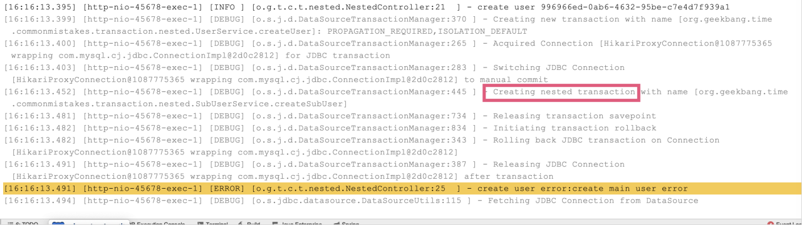
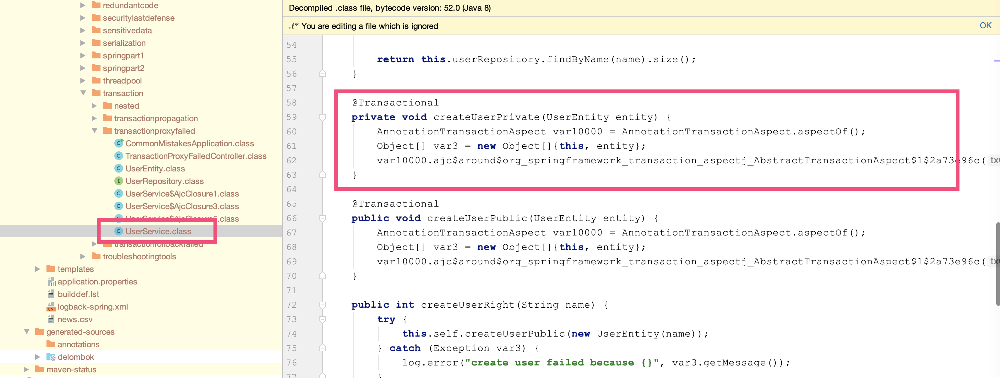

- 00 开篇词 业务代码真的会有这么多坑？.md.html
- 01 使用了并发工具类库，线程安全就高枕无忧了吗？.md.html
- 02 代码加锁：不要让“锁”事成为烦心事.md.html
- 03 线程池：业务代码最常用也最容易犯错的组件.md.html
- 04 连接池：别让连接池帮了倒忙.md.html
- 05 HTTP调用：你考虑到超时、重试、并发了吗？.md.html
- 06 2成的业务代码的Spring声明式事务，可能都没处理正确.md.html
- 07 数据库索引：索引并不是万能药.md.html
- 08 判等问题：程序里如何确定你就是你？.md.html
- 09 数值计算：注意精度、舍入和溢出问题.md.html
- 10 集合类：坑满地的List列表操作.md.html
- 11 空值处理：分不清楚的null和恼人的空指针.md.html
- 12 异常处理：别让自己在出问题的时候变为瞎子.md.html
- 13 日志：日志记录真没你想象的那么简单.md.html
- 14 文件IO：实现高效正确的文件读写并非易事.md.html
- 15 序列化：一来一回你还是原来的你吗？.md.html
- 16 用好Java 8的日期时间类，少踩一些“老三样”的坑.md.html
- 17 别以为“自动挡”就不可能出现OOM.md.html
- 18 当反射、注解和泛型遇到OOP时，会有哪些坑？.md.html
- 19 Spring框架：IoC和AOP是扩展的核心.md.html
- 20 Spring框架：框架帮我们做了很多工作也带来了复杂度.md.html
- 21 代码重复：搞定代码重复的三个绝招.md.html
- 22 接口设计：系统间对话的语言，一定要统一.md.html
- 23 缓存设计：缓存可以锦上添花也可以落井下石.md.html
- 24 业务代码写完，就意味着生产就绪了？.md.html
- 25 异步处理好用，但非常容易用错.md.html
- 26 数据存储：NoSQL与RDBMS如何取长补短、相辅相成？.md.html
- 27 数据源头：任何客户端的东西都不可信任.md.html
- 28 安全兜底：涉及钱时，必须考虑防刷、限量和防重.md.html
- 29 数据和代码：数据就是数据，代码就是代码.md.html
- 30 如何正确保存和传输敏感数据？.md.html
- 31 加餐1：带你吃透课程中Java 8的那些重要知识点（一）.md.html
- 32 加餐2：带你吃透课程中Java 8的那些重要知识点（二）.md.html
- 33 加餐3：定位应用问题，排错套路很重要.md.html
- 34 加餐4：分析定位Java问题，一定要用好这些工具（一）.md.html
- 35 加餐5：分析定位Java问题，一定要用好这些工具（二）.md.html
- 36 加餐6：这15年来，我是如何在工作中学习技术和英语的？.md.html
- 37 加餐7：程序员成长28计.md.html
- 38 加餐8：Java程序从虚拟机迁移到Kubernetes的一些坑.md.html
- 答疑篇：代码篇思考题集锦（一）.md.html
- 答疑篇：代码篇思考题集锦（三）.md.html
- 答疑篇：代码篇思考题集锦（二）.md.html
- 答疑篇：加餐篇思考题答案合集.md.html
- 答疑篇：安全篇思考题答案合集.md.html
- 答疑篇：设计篇思考题答案合集.md.html
- 结束语 写代码时，如何才能尽量避免踩坑？.md.html
答疑篇：代码篇思考题集锦（一）
你好，我是朱晔。
在回复《Java 业务开发常见错误 100 例》这门课留言的过程中，我看到有些同学特别想看一看咱们这个课程所有思考题的答案。因此呢，我特地将这个课程涉及的思考题进行了梳理，把其中的 67 个问题的答案或者说解题思路，详细地写了出来，并整理成了一个“答疑篇”模块。
我把这些问题拆分为了 6 篇分别更新，你可以根据自己的时间来学习，以保证学习效果。你可以通过这些回答，再来回顾下这些知识点，以求温故而知新；同时，你也可以对照着我的回答，对比下自己的解题思路，看看有没有什么不一样的地方，并留言给我。
今天是答疑篇的第一讲，我们一起来分析下咱们这门课前 6 讲的课后思考题。这些题目涉及了并发工具、代码加锁、线程池、连接池、HTTP 调用和 Spring 声明式事务的 12 道思考题。
接下来，我们就一一具体分析吧。
01 | 使用了并发工具类库，线程安全就高枕无忧了吗？
问题 1：ThreadLocalRandom 是 Java 7 引入的一个生成随机数的类。你觉得可以把它的实例设置到静态变量中，在多线程情况下重用吗？
答：不能。
ThreadLocalRandom 文档里有这么一条：
Usages of this class should typically be of the form: ThreadLocalRandom.current().nextX(…) (where X is Int, Long, etc). When all usages are of this form, it is never possible to accidently share a ThreadLocalRandom across multiple threads.
那为什么规定要 ThreadLocalRandom.current().nextX(…) 这样来使用呢？我来分析下原因吧。
current() 的时候初始化一个初始化种子到线程，每次 nextseed 再使用之前的种子生成新的种子：
UNSAFE.putLong(t = Thread.currentThread(), SEED, r = UNSAFE.getLong(t, SEED) + GAMMA);
如果你通过主线程调用一次 current 生成一个 ThreadLocalRandom 的实例保存起来，那么其它线程来获取种子的时候必然取不到初始种子，必须是每一个线程自己用的时候初始化一个种子到线程。你可以在 nextSeed 方法设置一个断点来测试：
UNSAFE.getLong(Thread.currentThread(),SEED);
问题 2：ConcurrentHashMap 还提供了 putIfAbsent 方法，你能否通过查阅JDK 文档，说说 computeIfAbsent 和 putIfAbsent 方法的区别？
答：computeIfAbsent 和 putIfAbsent 这两个方法，都是判断值不存在的时候为 Map 进行赋值的原子方法，它们的区别具体包括以下三个方面：
当 Key 存在的时候，如果 Value 的获取比较昂贵的话，putIfAbsent 方法就会白白浪费时间在获取这个昂贵的 Value 上（这个点特别注意），而 computeIfAbsent 则会因为传入的是 Lambda 表达式而不是实际值不会有这个问题。
Key 不存在的时候，putIfAbsent 会返回 null，这时候我们要小心空指针；而 computeIfAbsent 会返回计算后的值，不存在空指针的问题。
当 Key 不存在的时候，putIfAbsent 允许 put null 进去，而 computeIfAbsent 不能（当然了，此条针对 HashMap，ConcurrentHashMap 不允许 put null value 进去）。
我写了一段代码来证明这三点，你可以点击这里的 GitHub 链接查看。
02 | 代码加锁：不要让“锁”事成为烦心事
问题 1：在这一讲开头的例子里，我们为变量 a、b 都使用了 volatile 关键字进行修饰，你知道 volatile 关键字的作用吗？我之前遇到过这样一个坑：我们开启了一个线程无限循环来跑一些任务，有一个 bool 类型的变量来控制循环的退出，默认为 true 代表执行，一段时间后主线程将这个变量设置为了 false。如果这个变量不是 volatile 修饰的，子线程可以退出吗？你能否解释其中的原因呢？
答：不能退出。比如下面的代码，3 秒后另一个线程把 b 设置为 false，但是主线程无法退出：
private static boolean b = true;
public static void main(String[] args) throws InterruptedException {
new Thread(()->{
try {
TimeUnit.SECONDS.sleep(3);
} catch (InterruptedException e) { }
b =false;
}).start();
while (b) {
TimeUnit.MILLISECONDS.sleep(0);
}
System.out.println("done");
}
其实，这是可见性的问题。
虽然另一个线程把 b 设置为了 false，但是这个字段在 CPU 缓存中，另一个线程（主线程）还是读不到最新的值。使用 volatile 关键字，可以让数据刷新到主内存中去。准确来说，让数据刷新到主内存中去是两件事情：
将当前处理器缓存行的数据，写回到系统内存；
这个写回内存的操作会导致其他 CPU 里缓存了该内存地址的数据变为无效。
当然，使用 AtomicBoolean 等关键字来修改变量 b 也行。但相比 volatile 来说，AtomicBoolean 等关键字除了确保可见性，还提供了 CAS 方法，具有更多的功能，在本例的场景中用不到。
问题 2：关于代码加锁还有两个坑，一是加锁和释放没有配对的问题，二是分布式锁自动释放导致的重复逻辑执行的问题。你有什么方法来发现和解决这两个问题吗？
答：针对加解锁没有配对的问题，我们可以用一些代码质量工具或代码扫描工具（比如 Sonar）来帮助排查。这个问题在编码阶段就能发现。
针对分布式锁超时自动释放问题，可以参考 Redisson 的 RedissonLock 的锁续期机制。锁续期是每次续一段时间，比如 30 秒，然后 10 秒执行一次续期。虽然是无限次续期，但即使客户端崩溃了也没关系，不会无限期占用锁，因为崩溃后无法自动续期自然最终会超时。
03 | 线程池：业务代码最常用也最容易犯错的组件
问题 1：在讲线程池的管理策略时我们提到，或许一个激进创建线程的弹性线程池更符合我们的需求，你能给出相关的实现吗？实现后再测试一下，是否所有的任务都可以正常处理完成呢？
答：我们按照文中提到的两个思路来实现一下激进线程池：
由于线程池在工作队列满了无法入队的情况下会扩容线程池，那么我们可以重写队列的 offer 方法，造成这个队列已满的假象；
由于我们 Hack 了队列，在达到了最大线程后势必会触发拒绝策略，那么我们还需要实现一个自定义的拒绝策略处理程序，这个时候再把任务真正插入队列。
完整的实现代码以及相应的测试代码如下：
@GetMapping("better")
public int better() throws InterruptedException {
//这里开始是激进线程池的实现
BlockingQueue<Runnable> queue = new LinkedBlockingQueue<Runnable>(10) {
@Override
public boolean offer(Runnable e) {
//先返回false，造成队列满的假象，让线程池优先扩容
return false;
}
};
ThreadPoolExecutor threadPool = new ThreadPoolExecutor(
2, 5,
5, TimeUnit.SECONDS,
queue, new ThreadFactoryBuilder().setNameFormat("demo-threadpool-%d").get(), (r, executor) -> {
try {
//等出现拒绝后再加入队列
//如果希望队列满了阻塞线程而不是抛出异常，那么可以注释掉下面三行代码，修改为executor.getQueue().put(r);
if (!executor.getQueue().offer(r, 0, TimeUnit.SECONDS)) {
throw new RejectedExecutionException("ThreadPool queue full, failed to offer " + r.toString());
}
} catch (InterruptedException e) {
Thread.currentThread().interrupt();
}
});
//激进线程池实现结束
printStats(threadPool);
//每秒提交一个任务，每个任务耗时10秒执行完成，一共提交20个任务
//任务编号计数器
AtomicInteger atomicInteger = new AtomicInteger();
IntStream.rangeClosed(1, 20).forEach(i -> {
try {
TimeUnit.SECONDS.sleep(1);
} catch (InterruptedException e) {
e.printStackTrace();
}
int id = atomicInteger.incrementAndGet();
try {
threadPool.submit(() -> {
log.info("{} started", id);
try {
TimeUnit.SECONDS.sleep(10);
} catch (InterruptedException e) {
}
log.info("{} finished", id);
});
} catch (Exception ex) {
log.error("error submitting task {}", id, ex);
atomicInteger.decrementAndGet();
}
});
TimeUnit.SECONDS.sleep(60);
return atomicInteger.intValue();
}
使用这个激进的线程池可以处理完这 20 个任务，因为我们优先开启了更多线程来处理任务。
[10:57:16.092] [demo-threadpool-4] [INFO ] [o.g.t.c.t.t.ThreadPoolOOMController:157 ] - 20 finished
[10:57:17.062] [pool-8-thread-1] [INFO ] [o.g.t.c.t.t.ThreadPoolOOMController:22 ] - =========================
[10:57:17.062] [pool-8-thread-1] [INFO ] [o.g.t.c.t.t.ThreadPoolOOMController:23 ] - Pool Size: 5
[10:57:17.062] [pool-8-thread-1] [INFO ] [o.g.t.c.t.t.ThreadPoolOOMController:24 ] - Active Threads: 0
[10:57:17.062] [pool-8-thread-1] [INFO ] [o.g.t.c.t.t.ThreadPoolOOMController:25 ] - Number of Tasks Completed: 20
[10:57:17.062] [pool-8-thread-1] [INFO ] [o.g.t.c.t.t.ThreadPoolOOMController:26 ] - Number of Tasks in Queue: 0
[10:57:17.062] [pool-8-thread-1] [INFO ] [o.g.t.c.t.t.ThreadPoolOOMController:28 ] - =========================
问题 2：在讲“务必确认清楚线程池本身是不是复用”时，我们改进了 ThreadPoolHelper 使其能够返回复用的线程池。如果我们不小心每次都创建了这样一个自定义的线程池（10 核心线程，50 最大线程，2 秒回收的），反复执行测试接口线程，最终可以被回收吗？会出现 OOM 问题吗？
答：会因为创建过多线程导致 OOM，因为默认情况下核心线程不会回收，并且 ThreadPoolExecutor 也回收不了。
我们可以看看它的源码，工作线程 Worker 是内部类，只要它活着，换句话说就是线程在跑，就会阻止 ThreadPoolExecutor 回收：
public class ThreadPoolExecutor extends AbstractExecutorService {
private final class Worker
extends AbstractQueuedSynchronizer
implements Runnable
{
}
}
因此，我们不能认为 ThreadPoolExecutor 没有引用，就能回收。
04 | 连接池：别让连接池帮了倒忙
问题 1：有了连接池之后，获取连接是从连接池获取，没有足够连接时连接池会创建连接。这时，获取连接操作往往有两个超时时间：一个是从连接池获取连接的最长等待时间，通常叫作请求连接超时 connectRequestTimeout，或连接等待超时 connectWaitTimeout；一个是连接池新建 TCP 连接三次握手的连接超时，通常叫作连接超时 connectTimeout。针对 JedisPool、Apache HttpClient 和 Hikari 数据库连接池，你知道如何设置这 2 个参数吗？
答：假设我们希望设置连接超时 5s、请求连接超时 10s，下面我来演示下，如何配置 Hikari、Jedis 和 HttpClient 的两个超时参数。
针对 Hikari，设置两个超时时间的方式，是修改数据库连接字符串中的 connectTimeout 属性和配置文件中的 hikari 配置的 connection-timeout：
spring.datasource.hikari.connection-timeout=10000
spring.datasource.url=jdbc:mysql://localhost:6657/common_mistakes?connectTimeout=5000&characterEncoding=UTF-8&useSSL=false&rewriteBatchedStatements=true
针对 Jedis，是设置 JedisPoolConfig 的 MaxWaitMillis 属性和设置创建 JedisPool 时的 timeout 属性：
JedisPoolConfig config = new JedisPoolConfig();
config.setMaxWaitMillis(10000);
try (JedisPool jedisPool = new JedisPool(config, "127.0.0.1", 6379, 5000);
Jedis jedis = jedisPool.getResource()) {
return jedis.set("test", "test");
}
针对 HttpClient，是设置 RequestConfig 的 ConnectionRequestTimeout 和 ConnectTimeout 属性：
RequestConfig requestConfig = RequestConfig.custom()
.setConnectTimeout(5000)
.setConnectionRequestTimeout(10000)
.build();
HttpGet httpGet = new HttpGet("http://127.0.0.1:45678/twotimeoutconfig/test");
httpGet.setConfig(requestConfig);
try (CloseableHttpResponse response = httpClient.execute(httpGet)) {
return EntityUtils.toString(response.getEntity());
} catch (Exception ex) {
ex.printStackTrace();
}
return null;
也可以直接参考我放在GitHub上的源码。
问题 2：对于带有连接池的 SDK 的使用姿势，最主要的是鉴别其内部是否实现了连接池，如果实现了连接池要尽量复用 Client。对于 NoSQL 中的 MongoDB 来说，使用 MongoDB Java 驱动时，MongoClient 类应该是每次都创建还是复用呢？你能否在官方文档中找到答案呢？
答：官方文档里有这么一段话：
Typically you only create one MongoClient instance for a given MongoDB deployment (e.g. standalone, replica set, or a sharded cluster) and use it across your application. However, if you do create multiple instances:
All resource usage limits (e.g. max connections, etc.) apply per MongoClient instance.
To dispose of an instance, call MongoClient.close() to clean up resources.
MongoClient 类应该尽可能复用（一个 MongoDB 部署只使用一个 MongoClient），不过复用不等于在任何情况下就只用一个。正如文档里所说，每一个 MongoClient 示例有自己独立的资源限制。
05 | HTTP 调用：你考虑到超时、重试、并发了吗？
问题 1：在“配置连接超时和读取超时参数的学问”这一节中，我们强调了要注意连接超时和读取超时参数的配置，大多数的 HTTP 客户端也都有这两个参数。有读就有写，但为什么我们很少看到“写入超时”的概念呢？
答：其实写入操作只是将数据写入 TCP 的发送缓冲区，已经发送到网络的数据依然需要暂存在发送缓冲区中，只有收到对方的 ack 后，操作系统内核才从缓冲区中清除这一部分数据，为后续发送数据腾出空间。
如果接收端从 socket 读取数据的速度太慢，可能会导致发送端发送缓冲区满，导致写入操作阻塞，产生写入超时。但是，因为有滑动窗口的控制，通常不太容易发生发送缓冲区满导致写入超时的情况。相反，读取超时包含了服务端处理数据执行业务逻辑的时间，所以读取超时是比较容易发生的。
这也就是为什么我们一般都会比较重视读取超时而不是写入超时的原因了。
问题 2：除了 Ribbon 的 AutoRetriesNextServer 重试机制，Nginx 也有类似的重试功能。你了解 Nginx 相关的配置吗？
答：关于 Nginx 的重试功能，你可以参考这里，了解下 Nginx 的 proxy_next_upstream 配置。
proxy_next_upstream，用于指定在什么情况下 Nginx 会将请求转移到其他服务器上。其默认值是 proxy_next_upstream error timeout，即发生网络错误以及超时，才会重试其他服务器。也就是说，默认情况下，服务返回 500 状态码是不会重试的。
如果我们想在请求返回 500 状态码时也进行重试，可以配置：
proxy_next_upstream error timeout http_500;
需要注意的是，proxy_next_upstream 配置中有一个选项 non_idempotent，一定要小心开启。通常情况下，如果请求使用非等幂方法（POST、PATCH），请求失败后不会再到其他服务器进行重试。但是，加上 non_idempotent 这个选项后，即使是非幂等请求类型（例如 POST 请求），发生错误后也会重试。
06 | 20% 的业务代码的 Spring 声明式事务，可能都没处理正确
问题 1：考虑到 Demo 的简洁，这一讲中所有数据访问使用的都是 Spring Data JPA。国内大多数互联网业务项目是使用 MyBatis 进行数据访问的，使用 MyBatis 配合 Spring 的声明式事务也同样需要注意这一讲中提到的这些点。你可以尝试把今天的 Demo 改为 MyBatis 做数据访问实现，看看日志中是否可以体现出这些坑？
答：使用 mybatis-spring-boot-starter 无需做任何配置，即可使 MyBatis 整合 Spring 的声明式事务。在 GitHub 上的课程源码中，我更新了一个使用 MyBatis 配套嵌套事务的例子，实现的效果是主方法出现异常，子方法的嵌套事务也会回滚。
我来和你解释下这个例子中的核心代码：
@Transactional
public void createUser(String name) {
createMainUser(name);
try {
subUserService.createSubUser(name);
} catch (Exception ex) {
log.error("create sub user error:{}", ex.getMessage());
}
//如果createSubUser是NESTED模式，这里抛出异常会导致嵌套事务无法“提交”
throw new RuntimeException("create main user error");
}
子方法使用了 NESTED 事务传播模式：
@Transactional(propagation = Propagation.NESTED)
public void createSubUser(String name) {
userDataMapper.insert(name, "sub");
}
执行日志如下图所示：

每个 NESTED 事务执行前，会将当前操作保存下来，叫做 savepoint（保存点）。NESTED 事务在外部事务提交以后自己才会提交，如果当前 NESTED 事务执行失败，则回滚到之前的保存点。
问题 2：在讲“小心 Spring 的事务可能没有生效”时我们提到，如果要针对 private 方法启用事务，动态代理方式的 AOP 不可行，需要使用静态织入方式的 AOP，也就是在编译期间织入事务增强代码，可以配置 Spring 框架使用 AspectJ 来实现 AOP。你能否参阅 Spring 的文档“Using @Transactional with AspectJ”试试呢？注意：AspectJ 配合 lombok 使用，还可能会踩一些坑。
答：我们需要加入 aspectj 的依赖和配置 aspectj-maven-plugin 插件，并且需要设置 Spring 开启 AspectJ 事务管理模式。具体的实现方式，包括如下 4 步。
第一步，引入 spring-aspects 依赖：
<dependency>
<groupId>org.springframework</groupId>
<artifactId>spring-aspects</artifactId>
</dependency>
第二步，加入 lombok 和 aspectj 插件：
<plugin>
<groupId>org.projectlombok</groupId>
<artifactId>lombok-maven-plugin</artifactId>
<version>1.18.0.0</version>
<executions>
<execution>
<phase>generate-sources</phase>
<goals>
<goal>delombok</goal>
</goals>
</execution>
</executions>
<configuration>
<addOutputDirectory>false</addOutputDirectory>
<sourceDirectory>src/main/java</sourceDirectory>
</configuration>
</plugin>
<plugin>
<groupId>org.codehaus.mojo</groupId>
<artifactId>aspectj-maven-plugin</artifactId>
<version>1.10</version>
<configuration>
<complianceLevel>1.8</complianceLevel>
<source>1.8</source>
<aspectLibraries>
<aspectLibrary>
<groupId>org.springframework</groupId>
<artifactId>spring-aspects</artifactId>
</aspectLibrary>
</aspectLibraries>
</configuration>
<executions>
<execution>
<goals>
<goal>compile</goal>
<goal>test-compile</goal>
</goals>
</execution>
</executions>
</plugin>
使用 delombok 插件的目的是，把代码中的 Lombok 注解先编译为代码，这样 AspectJ 编译不会有问题，同时需要设置中的 sourceDirectory 为 delombok 目录：
<sourceDirectory>${project.build.directory}/generated-sources/delombok</sourceDirectory>
第三步，设置 @EnableTransactionManagement 注解，开启事务管理走 AspectJ 模式：
@SpringBootApplication
@EnableTransactionManagement(mode = AdviceMode.ASPECTJ)
public class CommonMistakesApplication {
第四步，使用 Maven 编译项目，编译后查看 createUserPrivate 方法的源码，可以发现 AspectJ 帮我们做编译时织入（Compile Time Weaving）：

运行程序，观察日志可以发现 createUserPrivate（私有）方法同样应用了事务，出异常后事务回滚：
[14:21:39.155] [http-nio-45678-exec-2] [DEBUG] [o.s.orm.jpa.JpaTransactionManager:370 ] - Creating new transaction with name [org.geekbang.time.commonmistakes.transaction.transactionproxyfailed.UserService.createUserPrivate]: PROPAGATION_REQUIRED,ISOLATION_DEFAULT
[14:21:39.155] [http-nio-45678-exec-2] [DEBUG] [o.s.orm.jpa.JpaTransactionManager:393 ] - Opened new EntityManager [SessionImpl(1087443072<open>)] for JPA transaction
[14:21:39.158] [http-nio-45678-exec-2] [DEBUG] [o.s.orm.jpa.JpaTransactionManager:421 ] - Exposing JPA transaction as JDBC [org.springframewo[email protected]4e16e6ea]
[14:21:39.159] [http-nio-45678-exec-2] [DEBUG] [o.s.orm.jpa.JpaTransactionManager:356 ] - Found thread-bound EntityManager [SessionImpl(1087443072<open>)] for JPA transaction
[14:21:39.159] [http-nio-45678-exec-2] [DEBUG] [o.s.orm.jpa.JpaTransactionManager:471 ] - Participating in existing transaction
[14:21:39.173] [http-nio-45678-exec-2] [DEBUG] [o.s.orm.jpa.JpaTransactionManager:834 ] - Initiating transaction rollback
[14:21:39.173] [http-nio-45678-exec-2] [DEBUG] [o.s.orm.jpa.JpaTransactionManager:555 ] - Rolling back JPA transaction on EntityManager [SessionImpl(1087443072<open>)]
[14:21:39.176] [http-nio-45678-exec-2] [DEBUG] [o.s.orm.jpa.JpaTransactionManager:620 ] - Closing JPA EntityManager [SessionImpl(1087443072<open>)] after transaction
[14:21:39.176] [http-nio-45678-exec-2] [ERROR] [o.g.t.c.t.t.UserService:28 ] - create user failed because invalid username!
[14:21:39.177] [http-nio-45678-exec-2] [DEBUG] [o.s.o.j.SharedEntityManagerCreator$SharedEntityManagerInvocationHandler:305 ] - Creating new EntityManager for shared EntityManager invocation
以上，就是咱们这门课前 6 讲的思考题答案了。
关于这些题目，以及背后涉及的知识点，如果你还有哪里感觉不清楚的，欢迎在评论区与我留言，也欢迎你把今天的内容分享给你的朋友或同事，一起交流。